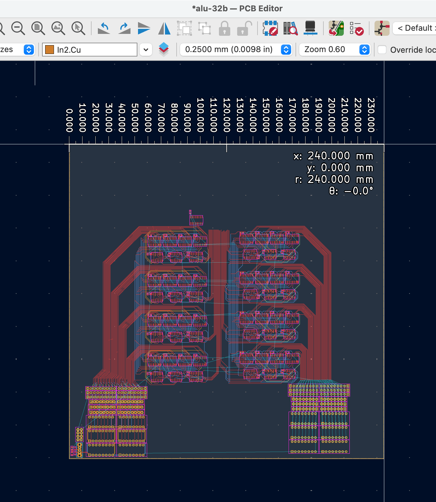

Dispatch · Architecture
Do not fab one 240 millimetre monster. Cascade 16-bit cells.
PCB houses do not manufacture only one board. Slice into 16-bit macros that cascade. Inner cells drop flag logic. Zero walks Zero-in / Zero-out.
This ALU has taken several routes since the first abstractions. In the most recent version I wanted to wire eight 4-bit cells into a 32-bit cell. The catch: PCB fabrication does not manufacture only one board.
To keep manufacturing efficient and reusable, slice into 16-bit macro cells designed to cascade into 16b × n. Four cells is a 64-bit logic unit. Inner boards do not need flag registers or overflow generation. Eliminating those chips should not constrain Tomato.


Zero propagates as Zero-in and Zero-out per cell. Carry-out is just the next sum bit. The additional consequence: board size drops from a squeezed 240 × 240 mm design toward half of that. I estimated 120 × 120 mm, with extreme reusability and no waste. The 07_alu that later went to fab is the grandchild of this thought — smaller still, one 8-bit slice, two ordered.